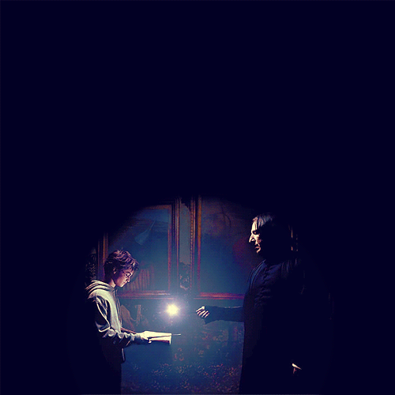

Mum, parafin, donyağı ya da bunlara benzer, yavaş yanan bir maddenin, genellikle pamuktan yapılan bir fitilin üzerine döküldükten sonra katılaştırılması yöntemiyle hazırlanan, genellikle silindir biçimindeki ışık kaynağıdır. İlk olarak parafini eledik çünkü sağlığa zararlı bir madde. Bizlerse sağlık alanında imtihan yaşadığımız bu günlerde ilk olarak buna dikkat ettik. Bu nedenle mumlarımızın yapımında soya kullanıyoruz. Hem uygulaması rahat, ürün ömrün daha uzun olması ve en önemlisi de sağlıklı olması. Hem bizler hem de sizler için en iyi seçenek buydu :) Umarım sizler de ürünlerden memnun kalırsınız...
Mumların Etkisi
Mum ışığının ruh halimizi olumlu etkilediği bir gerçek. Mumu hangi ruh halinde olursanız olun yaktığınızdaki o değişimi farkettiniz mi? Bir akşam yemeğinde, kızlar gecesinde, yalnızken, radyo dinlediğinizde, film izlerken ve tabi elektrikler gittiğinde :) Nasıl ki çevremizdeki insalar etkiliyorsa yaşantımızı bulunduğumuz mekan da aynı. Sürekli bulunduğumuz yeri düşünelim evlerimizi ya da çalışma masamızı. Buraları güzelleştirmek için uğraşırız değil mi? Çünkü her yerden çok o ortamdayız ve oranın ruha etkisi daha fazladır. Bu yüzdendir ki hep güzelleştirmeye çalışırız. Dekoratif eşyalar, çiçekler, mumlar... Üstelik kokuluysa mumlar :)

LUMOS

EXPECTO PATRONUM